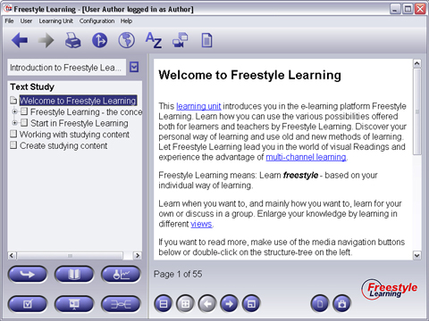

With the Text Study you have a hypertext based view upon the learning content provided by hypertext based documents. You may use this view for gaining basic and detailed knowledge about the learning content. Selecting any non-folder element from the structure tree will display the corresponding HTML document in the Content Panel. These documents may contain markup text, pictures, tables and links. Link targets can be web urls but also other Freestyle Learning Elements. You even can have more than one target per link. When you click on a hyperlink which provides more than one target, a dialog will be shown from which you can select the link to be followed. Use the Back button from the toolbar to return to the element you started from.

The Interaction Panel contains Default Interaction Buttons: the Default Navigation Buttons and the Split Screen Buttons which allow to navigate back and forth through the Structure Tree and view two Text Elements at the same time.
Back to Main Help Page